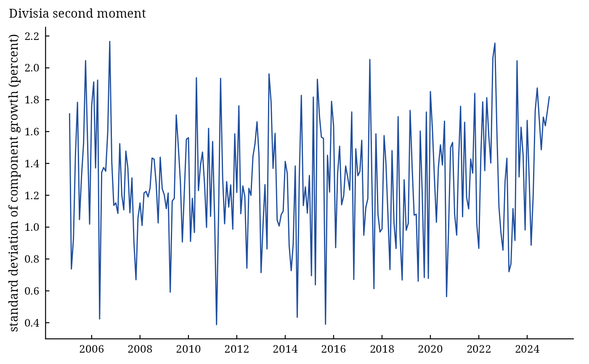

dmai_moments() gives the Divisia mean and variance of the growth rates of the components at every date
(Theil 1967; Barnett and Serletis 1990): $$\kappa_t = \sum_i \bar{s}_{it}\,\Delta\log x_{it}, \qquad K_t =
\sum_i \bar{s}_{it}\left(\Delta\log x_{it} - \kappa_t\right)^2,$$ and the same for the user costs. A large variance means the components grow at
very different rates, so that the choice of weights matters and the simple sum is a poor guide; Barnett and
Serletis use it as a diagnostic of aggregation error.
Usage
dmai_moments(.data, ...)
# Default S3 method
dmai_moments(
.data,
...,
date = "Date",
x = NULL,
r = NULL,
user_cost = NULL,
benchmark = NULL,
percent = TRUE
)
# S3 method for class 'dmai_index'
dmai_moments(.data, ...)Arguments
- .data
a data frame as in
dmai(), or a result ofdmai(..., as_dt = FALSE).- ...
further arguments of
dmai()(date,x,r,user_cost,benchmark,percent) when.datais a data frame.- date
name of the date column (default
"Date").- x
names of the quantity columns (default
NULL:x1,x2, ...).- r
names of the rate columns, in the order of
x(defaultNULL:r1,r2, ...).- user_cost
names of columns that give the user costs directly, in the order of
x(defaultNULL: computed from the rates). The rates are then needed only for"CE".- benchmark
the benchmark rate:
NULL(default, the largest component rate), a column name, a number or one value per row of.data, in the units of the rates.- percent
logical; are the rates in percent (default
TRUE) or decimal?
Value
An object of class c("dmai_moments", "dmai_result", "list"): moments (a data.table
with the date, growth = \(100\kappa_t\), variance = \(10^4K_t\),
sd, price_growth and price_variance) and settings. plot() draws the
standard deviation over time.
References
Barnett, W. A. and Serletis, A. (1990). A dispersion-dependency diagnostic test for aggregation error: with applications to monetary economics and income distribution. Journal of Econometrics, 43(1–2), 5–34. doi:10.1016/0304-4076(90)90104-2
Theil, H. (1967). Economics and Information Theory. North-Holland, Amsterdam.
See also
Other dmai analyses:
dmai(),
dmai_compare(),
dmai_user_cost()
Author
Muhammad Yaseen (myaseen208@gmail.com)
Examples
data(money_sim)
m <-
dmai_moments(
.data = money_sim
, benchmark = "rb"
)
m
#> Divisia second moments of 8 components, 240 dates
#> =================================================
#> Standard deviation of component growth (percent): mean 1.291, largest 2.166 at 2006-10-01
#>
#> Date growth variance sd price_growth price_variance
#> <Date> <num> <num> <num> <num> <num>
#> 1: 2005-01-01 NA NA NA NA NA
#> 2: 2005-02-01 0.8504 2.9412 1.7150 0.2897 1.660
#> 3: 2005-03-01 1.7329 0.5433 0.7371 -4.0886 2.806
#> 4: 2005-04-01 -0.2494 0.8553 0.9248 -0.5237 17.461
#> 5: 2005-05-01 0.3359 2.1111 1.4530 2.8567 33.914
#> ---
#> 236: 2024-08-01 0.1823 2.2071 1.4856 -0.6872 7.943
#> 237: 2024-09-01 0.5280 2.8598 1.6911 -4.3389 7.649
#> 238: 2024-10-01 0.9856 2.6784 1.6366 -1.8756 10.041
#> 239: 2024-11-01 2.0063 2.9887 1.7288 1.1803 9.420
#> 240: 2024-12-01 0.6266 3.3179 1.8215 -2.5608 7.970
#>
#> Sources: Theil (1967); Barnett and Serletis (1990). Full references:
#> dmai_cite(x).
plot(x = m)
